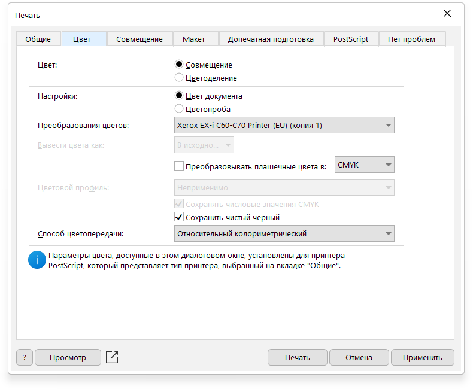
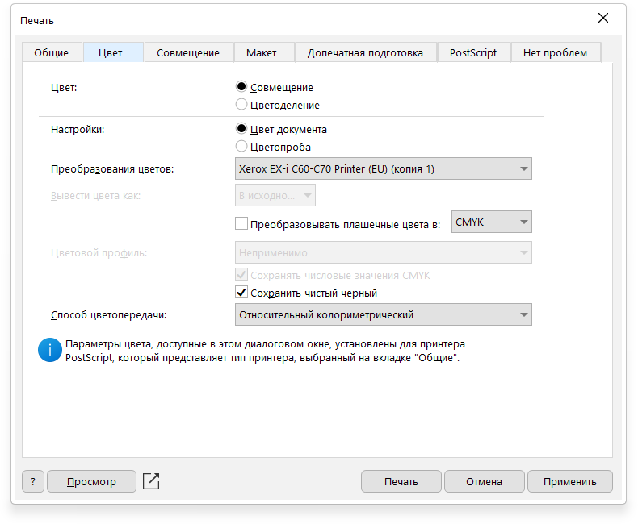

Печать из CorelDRAW
Открываем CorelDRAW. Нажимаем "Создать из шаблона" Выбираем необходимый шаблон. Если готовый шаблон вам не подходит выбираем любой и его корректируем
Заметка
Если, популярного формата в шаблонах нет, то лучше его сохранить и пользоваться в последствии
После открытия перетягиваем макет в рабочую облать.
Если макет требуется повернуть на панели сверку в инструменте поворот() вводим 90 и нажимаем Enter (либо сочетание клавиш Shift+R)
Далее размещаем макет по центру нажатием кнопки P
Проверяем макет. На макете должны быть:
- Поля минимум 2 мм. с каждой стороны
- Минимум в 2 мм. от линий обрезки не должно быть ценной информации
- Проверяем как выглядят шрифты, векторные изображения (только для PDF)
Далее нажимаем файл > печать (сочетание Ctrl+P)
 Выбираем принтер "Xerox EX-i C60-C70 Printer (EU)"
Выбираем принтер "Xerox EX-i C60-C70 Printer (EU)"
Нажимаем Выбирааем шаблон задания "Лоток 5" и закрываем

На вкладке "Цвет" устанавливаем Преобразования цветов "Xerox EX-i C60-C70 Printer (EU)"
На вкладке "Макет" указываем требуемую нам компоновку
Выбирааем шаблон задания "Лоток 5" и закрываем

На вкладке "Цвет" устанавливаем Преобразования цветов "Xerox EX-i C60-C70 Printer (EU)"
На вкладке "Макет" указываем требуемую нам компоновку
Заметка
Если, популярного формата компоновки в шаблонах нет, то лучше его сохранить и пользоваться в последствии
 На вкладке "Макет" Ввыбираем шаблон печати
На вкладке "Макет" Ввыбираем шаблон печати
–û—Ç–ø—Ä–∞–≤–ª—è–µ–º –Ω–∞–ø–µ—á–∞—Ç—å